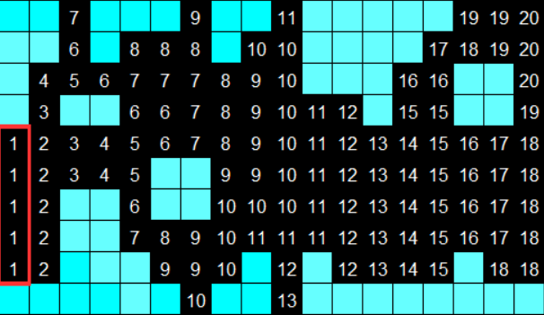
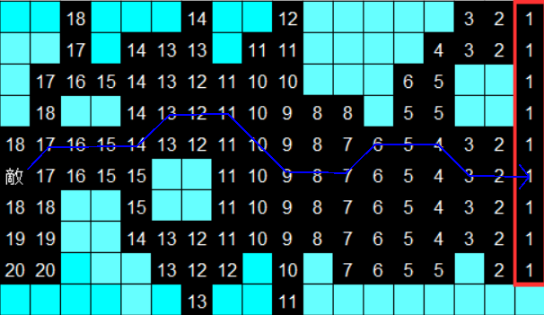

キャラクター移動自動生成
大まかな生成方法説明。
ソースコードは Classes\Data\MapData\MapData.cpp参照
敵の移動は左から右に移動するパターンと右から左に移動するパターンがある。

右から左に移動する場合、まず左端のマス目に１の番号を付ける。
１のマスに隣接するマスに１加算した番号を付ける。
画面右端まで同じ処理を繰り返す。
ランダムにマスにキャラを配置しそのマスの番号よりも小さい番号のマスに移動させる。
移動候補が複数ある場合はランダムに選ぶ。
画面左端まで同じ処理を繰り返す。

左から右に移動する場合は逆の処理を行う。